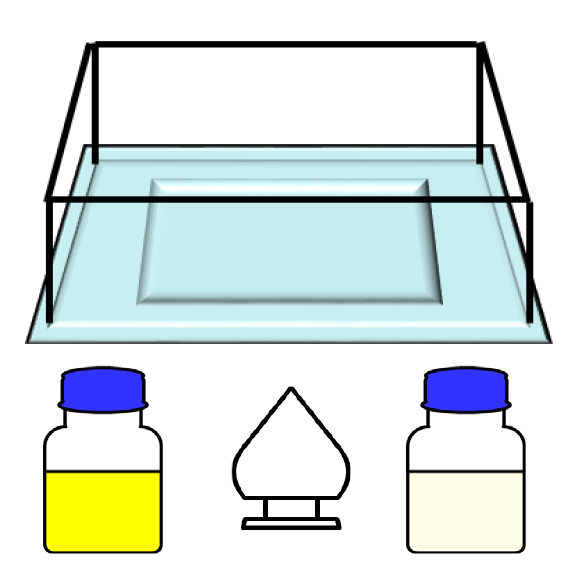

| 高效可循環複雜材料剝除與純化 High performance and reusable etchant for TFT panel |
| 針對無法重工組立的瑕疵面板組件，將 TFT 面板玻璃回用進 行選擇性剝膜技術開發。以化學法移除表面鍍層並無損傷玻 璃基板。維持高光穿透度(>90%)與低粗糙度(<0.05μm)。剝 除液可循環回用，開發吸附劑移除老化蝕刻液中金屬離子將 剝除液再生，減少廢棄化學品產生並降低玻璃回用成本。 Developing selective etching method to reclaim the glass of the deficient TFT panel which cannot be reworked or reassembled. The TFT layers are removed by wet chemicals and the transparency (>90%) and the Ra (<0.05μm) of the reclaimed glass can be maintained. The etchant is reusable when the metal ions are eliminating by the novel absorbent. The amount of waste chemicals will be decreased and the cost can be reduced.  |
| 技術洽詢聯絡人：李文錦 聯絡電話：03-591-8241 手機:0956730898 E-mail：WenJinLi@itri.org.tw |